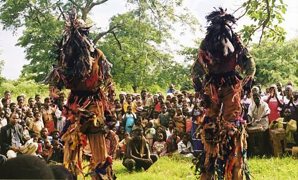
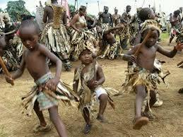
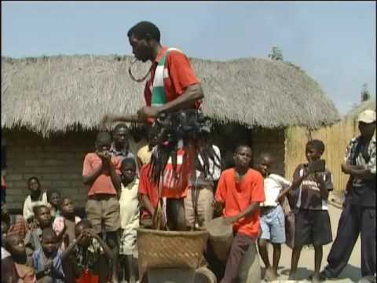
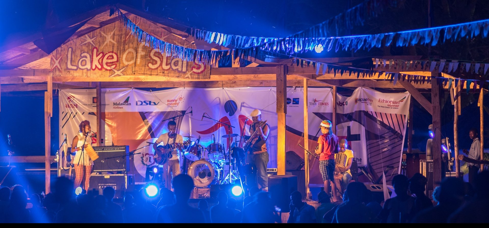
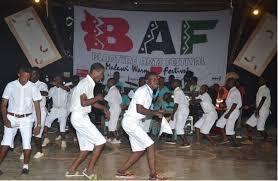
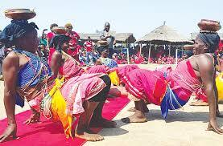

About This Project
This website is dedicated to showcasing Malawi's rich cultural heritage. Learn about traditional music, dances, art, cuisine, historical landmarks, and vibrant festivals that make Malawi unique.
Traditional Music & Dances
Explore iconic traditional music and dances such as:
-  Gule Wamkulu
-  Ingoma
-  Vimbuza
Art & Cuisine
Discover Malawi's unique art forms and delicious traditional dishes.
-
 Traditional Malawian Painting
Traditional Malawian Painting
-
 Handcrafted Wood Carving
Handcrafted Wood Carving
-
 Nsima with Relish
Nsima with Relish
Historical Landmarks
Learn about Malawi’s significant historical sites, including:
-
 Livingstonia Mission
Livingstonia Mission
-
 St. Michael and All Angels Church
St. Michael and All Angels Church
-
 Chongoni Rock Art Area
Chongoni Rock Art Area
Cultural Festivals & Events
Join in vibrant festivals such as:
-  Lake of Stars Festival
-  Blantyre Arts Festival
-  Mulhako wa Alhomwe
Contact Us
Have questions or want to learn more about Malawi's culture? Reach out to us!